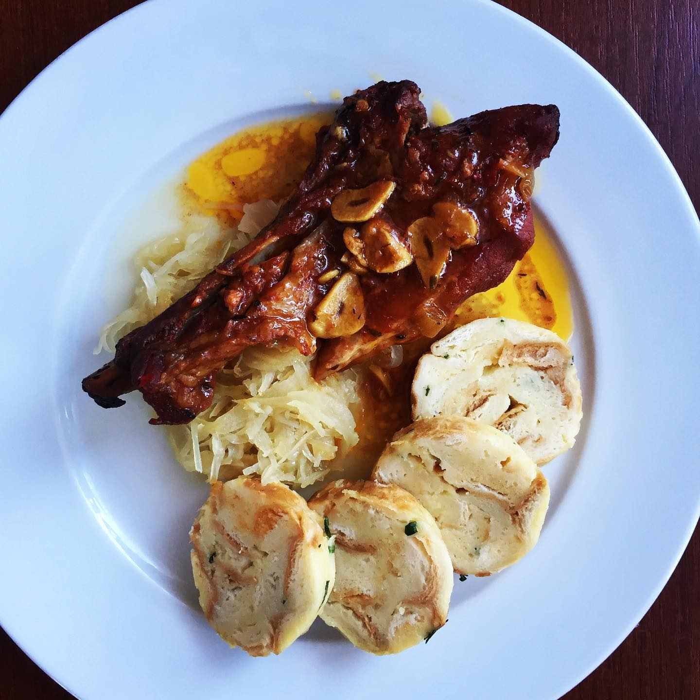

Dusená kyslá kapusta podľa @veronbiii — Normy Jedál
#nedelnyobed #pecenerebra na cesnaku #sladkopikantnamarinada #houskovyknedlik #dusenakyslakapusta
Pečené rebrá:
1/2 prerastené rebrá
2 lyžičky soli
1 lyžička údená paprika
1/2 lyžičky kari korenie
1 lyžička rasca mletá
1/2 lyžičky tymián
1 malý paradajkový pretlak
3 lyžice javorový sirup
2 lyžice sladká chilli omáčka
2 tenké plátky masla
4 strúčiky cesnaku pokrájané na hrubšie plátky, rovnako pokrájané 2 jarné cibuľky
Suché koreniny zmiešame , pridáme tekuté suroviny a marinádou natrieme rebrá, môžeme hneď upiecť alebo nechať odležať cez noc v chladničke. Pred pečením pridáme cesnak a cibuľku. Rúru predhrejeme na 180 a zakrytè pečieme hodinu , potom rebrá obrátime a pečieme ďalšiu hodinu. Zas obrátime a pečieme odokryté ešte polhodinu.
Knedličky:
300g rohlík starší pokrájaný na kocky
300 ml mlieko
3 vajcia
Plátok masla
Malá cibuľa
1 lyžica nasekanej pažítky alebo petržlenovej vňate
1/2 lyžičky soli
Štipka muškátového orieška
3 PL krupice
Rožky namočíme v mlieku, necháme odstáť, cibuľku nakrájanú na malé kocky osmažíme na masle, pridáme k rožkom, spolu s ďalšími surovinami. Premiešame a necháme zase postáť. Potom si do fólie vyformujeme valčeky z cesta a dáme variť do vriacej vody 20 minút.
Kyslá dusená kapusta:
Na lyžici masti skaramelizujeme dve lyžice cukru, pridáme tri hrste kyslej kapusty, jeden malý postrúhaných zemiak, asi deco vody a dusíme 3/4 hodiny.